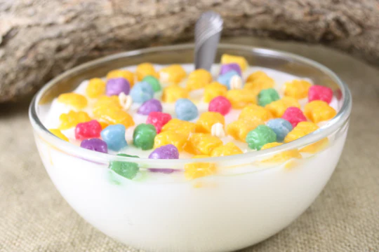

Cereal

Description
It's a bowl of cereal.
Ingredients
- Non-expired milk of your choice
- Cereal of your choice
- Bowl
- Spoon
Steps
- Get as big or small a bowl you want.
- Pour in your cereal. Only animals add the milk first
- The amount of milk you pour is correleated to your milk love + the type of cereal. Corn flake/corn flake based cereals get real soggy real quick. Crunchberry types, you wanna drown in milk to get that sweet, sugary nectar at the end of your noms session
- I'm going to scream if I start yet another self-learning project/lab with unfinished HTML because I got bored of doing this grunt stuff before moving on to the fun stuff.
- Can you tell I hate writing html content